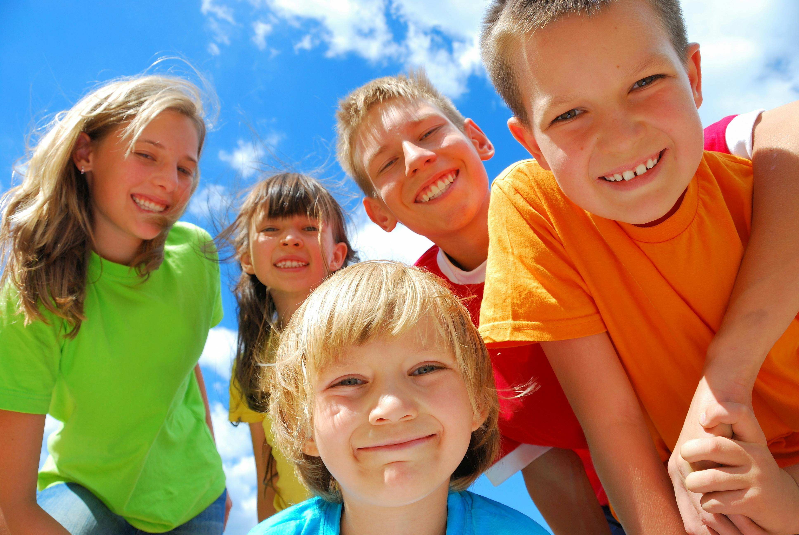
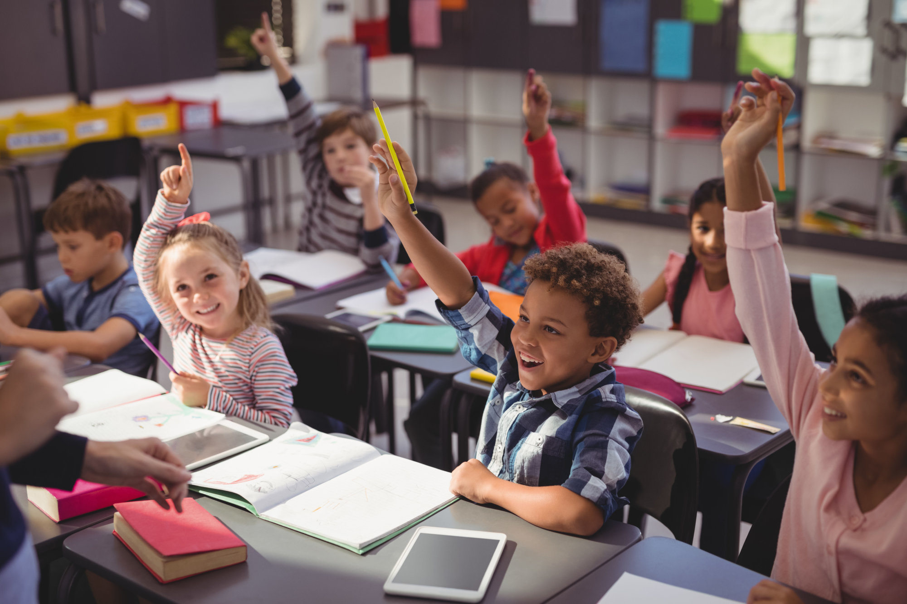

Caring for Children provides family-like care to hundreds of children from challenging and unstable family environments. We strive to foster healthy bonds and relationships that are essential for every child to thrive
and reach their full potential. Many of these children are unable to stay home due to violence and neglect, and some of them previously lived on the streets before joining us.Our family-like care provides personalised
attention and supporting each child's development

Mental Health
Mental health challenges often start in childhood and are very complex. Without supportive relationships and a safe environment, children may lack the necessary foundation for growth. Exposure to violence, abuse, and
neglect can have a severe impact on a child's development and long-term well-being. Research from organizations such as UNICEF and Save the Children highlights the important role of mental health in a child's future.

Education
Our primary and secondary schools offer free education to hundreds of children living within our child welfare centres and from the poor communities around us. Both schools have received the highest accreditation from
the Indonesian Ministry of Education, highlighting the excellence and impact of our educational programs. Our dedicated staff ensures every child receives the quality education they deserve paving the way to a brighter
future.